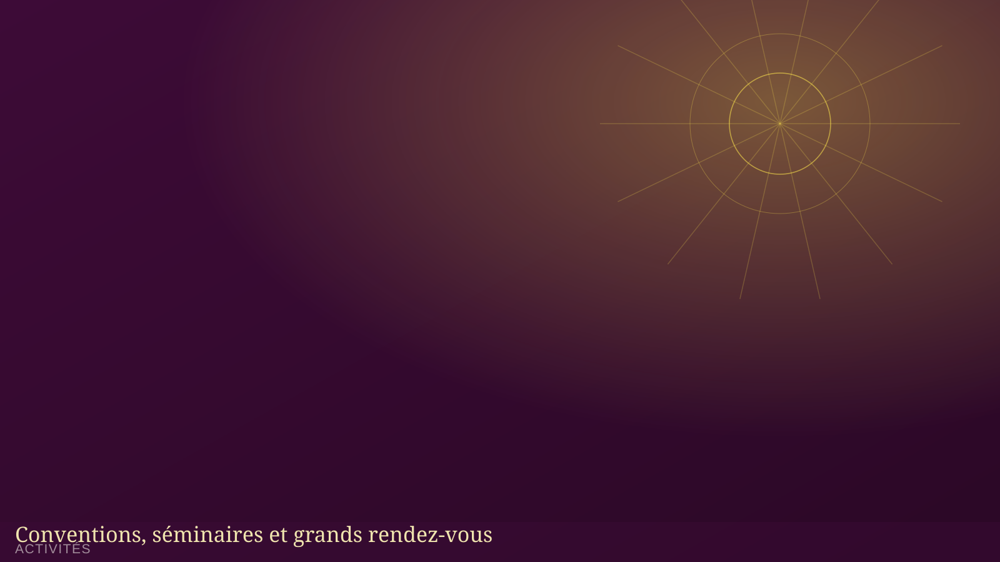

Nos activités
Conventions, conférences internationales et séminaires rythment la vie de la famille MIERR tout au long de l'année.
Nos activités
Cultes, conventions, conférences, séminaires et formations rythment la vie spirituelle de la famille MIERR tout au long de l'année.
Convention annuelle de la MIERR
Le grand rassemblement annuel de toute la famille MIERR : temps de louange, d'enseignement et de communion fraternelle.
Plus d'informations

CO-SEMIC
Conférence Internationale des Servantes Missionnaires de Christ : un temps fort dédié aux femmes de la MIERR, réunies autour de la Parole.
Découvrir le département SEMICCO-JEMOC
Conférence de la Jeunesse Missionnaire et Ouvriers de Christ : formation, mobilisation et envoi des jeunes au service de l'Évangile.
Découvrir le département JEMOC

Séminaire « Vision de l'Aigle »
Un séminaire de formation au leadership chrétien, destiné aux responsables et à toute personne appelée à servir.
S'informerCalendrier complet
| Date | Événement | Lieu | Catégorie |
|---|---|---|---|
| [JJ/MM/AAAA] | Convention annuelle de la MIERR | [Lieu] | Convention |
| [JJ/MM/AAAA] | CO-SEMIC | [Lieu] | Conférence |
| [JJ/MM/AAAA] | CO-JEMOC | [Lieu] | Conférence |
| [JJ/MM/AAAA] | Séminaire « Vision de l'Aigle » | [Lieu] | Séminaire |